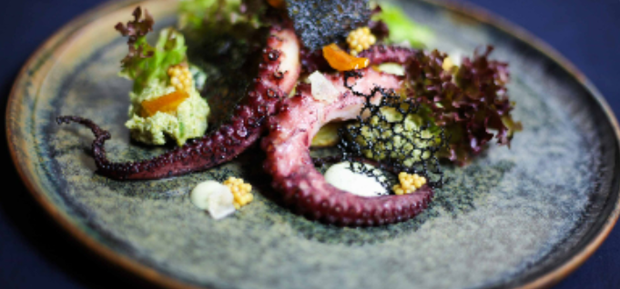

Bài Viết Nổi Bật

Nghệ Thuật Plating Trong Fine Dining
Khám phá cách các đầu bếp hàng đầu biến món ăn thành tác phẩm nghệ thuật, từ kỹ thuật cơ bản đến sáng tạo đỉnh cao
Đọc thêm ->
Các Bài Viết Khác
Bí Quyết Chọn Nguyên Liệu Cao Cấp
Từ Wagyu Nhật Bản đến hải sản tươi sông, học cách chọn nguyên liệu để tạo nên món ăn hoàn hảo.
Xu Hướng Ẩm Thực 2025
Những phong cách plating mới và nguyên liệu đang lên ngôi trong thế giới Fine Dining.
Hành Trình Của Một Đầu Bếp Michelin
Chia sẻ từ đầu bếp từng đạt sao Michelin về đam mê và thử thách trong bếp